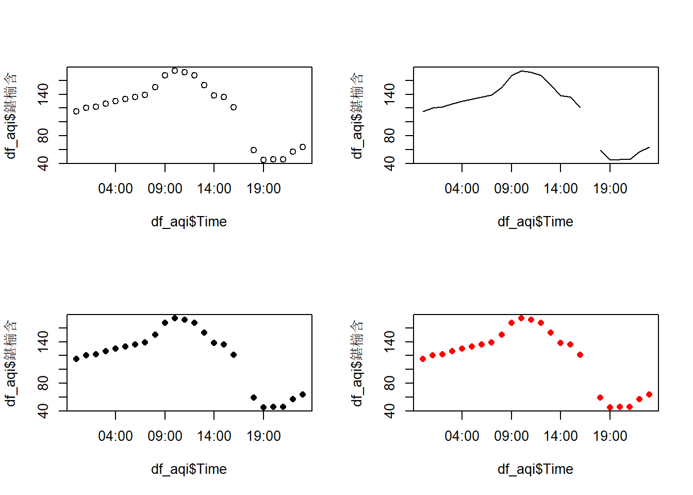

Chapter 3 Vectors and Spreadsheets
3.1 Excel，我的老朋友 - Excel, my old friend
Figure 3.1: Libreoffice Calc with some Chinese data
3.2 输入 - Inputs
x <- 1
print(x)
x
hello <- "你好"
hello
d <- TRUE
d
e <- 5 + 2i
e怎么了？ - What is happning?
3.3 对象 - Objects
R有5个基本类- R has 5 basic classes
- character
- numeric
- integer
- complex
- logical (TRUE or FALSE) or (T or F)
你可以检查这样的类： - You can check the class like this:
a <- 1:10
a## [1] 1 2 3 4 5 6 7 8 9 10class(a)## [1] "integer"做（5分钟） 检查提到的对象的类
do (5 min) Check the classes of the mentioned objects
3.4 Vectors
使用函数c()我们创建了将事物连接在一起的向量 - Using the function c()we create vectors concatenating things together
x <- c(0.5, 0.6)
x
x <- c(TRUE, FALSE)
x
x <- c(T, F)
x
x <- c("a", "b", "c")
x
x <- 9:29
x
x <- c(1+0i, 2+4i)
x3.5 混合对象 - Mixing objects
如果混合对象会发生什么？ - What happens if you mix objects???
x <- c(0.5, 0.6)
y <- c("a", "b", "c")
z <- c(x,y)
class(z)## [1] "character"y <- c(1.7, "a")
y <- c(TRUE, 2)
y <- c("a", TRUE)做（5分钟） 检查提到的对象的类
do (5 min) Check the classes of the mentioned objects
3.5.1 阅读Excel - Reading Excel
CHN
有时我们必须使用电子表格（Excel）分析数据。 如果数据很小且分析很简单，则没有问题。 但是什么 如果我们有数百万的混合观察会发生？ 使用Excel可能不是一个好主意。
做（5分钟） 打开文件china_cities_20190413.xlsx 检查数据 将其导出为.CSV .txt 使用Block Notes打开.CSV文件
ENG
Sometimes we must analize data using spreadsheets (Excel). If the data is small and the analyses is simple, there are no problems. But what happens if we have millions of mixed observations? Using Excel might be not a good idea.
do (5 min) Open the file china_cities_20190413.xlsx Check the data Export it to .CSV or .txt Open the .CSV file using Block Notes
library(readxl)
df <- read_xlsx("data/china_cities_20190413.xlsx")3.5.2 使用基础 - Using base
df <- read.csv("data/china_cities_20190413.csv", h = T, )
df2 <- read.table("data/china_cities_20190413.txt", h = T)3.5.3 使用data.table - Using data.table
data.table比python，julia，spark和dask更快
data.table is faster than python, julia, spark and dask
https://h2oai.github.io/db-benchmark/
library(data.table)
df <- fread("data/china_cities_20190413.csv")做（5分钟) - do (5 min)
head(df)
tail(df)
df$date
df[, 1]
df$hour
df[, 2]
df$date == df[, 1]
df$type
df$鍖椾含现在，检查唯一的值 - Now, check unique values
unique(df$type)## [1] "AQI" "PM2.5" "PM2.5_24h" "PM10" "PM10_24h"
## [6] "SO2" "SO2_24h" "NO2" "NO2_24h" "O3"
## [11] "O3_24h" "O3_8h" "O3_8h_24h" "CO" "CO_24h"CHN
我们可以看到，我们需要过滤我们的数据。 让我们只选择值为’AQI的列type`。
我们只选择日期，时间和第一个中文名称
ENG
As we can see, we need to filter our data. Let us select only the column type with value AQI.
Let us select only the date, time and the first Chinese name
df_aqi <- df[df$type == "AQI", c("date", "hour", "鍖椾含")]
head(df_aqi)## date hour 鍖椾含
## 1: 20190413 0 115
## 2: 20190413 1 120
## 3: 20190413 2 122
## 4: 20190413 3 126
## 5: 20190413 4 130
## 6: 20190413 5 133CHN
现在，连接日期和小时来创建时间列
ENG
Now, concatenate date and hour to create a time column
library(lubridate)##
## Attaching package: 'lubridate'## The following objects are masked from 'package:data.table':
##
## hour, isoweek, mday, minute, month, quarter, second, wday,
## week, yday, year## The following object is masked from 'package:base':
##
## dateunique(df_aqi$hour)## [1] 0 1 2 3 4 5 6 7 8 9 10 11 12 13 14 15 16 17 18 19 20 21 22
## [24] 23df_aqi$Time <- ymd_h(paste(df_aqi$date, df_aqi$hour))现在我们可以策划 - And now we can plot
3.6 Plots
par(mfrow = c(2,2))
plot(x = df_aqi$Time, y = df_aqi$鍖椾含)
plot(x = df_aqi$Time, y = df_aqi$鍖椾含, type = "l")
plot(x = df_aqi$Time, y = df_aqi$鍖椾含, type = "b", pch = 16)
plot(x = df_aqi$Time, y = df_aqi$鍖椾含, type = "b", pch = 16,col = "red")
par(mfrow = c(1,1))Here is a review of existing methods.
You can label chapter and section titles using {#label} after them, e.g., we can reference Chapter 2. If you do not manually label them, there will be automatic labels anyway, e.g., Chapter ??.
Figures and tables with captions will be placed in figure and table environments, respectively.
par(mar = c(4, 4, .1, .1))
plot(pressure, type = 'b', pch = 19)
Figure 3.2: Here is a nice figure!
Reference a figure by its code chunk label with the fig: prefix, e.g., see Figure 3.2. Similarly, you can reference tables generated from knitr::kable(), e.g., see Table 3.1.
knitr::kable(
head(iris, 20), caption = 'Here is a nice table!',
booktabs = TRUE
)| Sepal.Length | Sepal.Width | Petal.Length | Petal.Width | Species |
|---|---|---|---|---|
| 5.1 | 3.5 | 1.4 | 0.2 | setosa |
| 4.9 | 3.0 | 1.4 | 0.2 | setosa |
| 4.7 | 3.2 | 1.3 | 0.2 | setosa |
| 4.6 | 3.1 | 1.5 | 0.2 | setosa |
| 5.0 | 3.6 | 1.4 | 0.2 | setosa |
| 5.4 | 3.9 | 1.7 | 0.4 | setosa |
| 4.6 | 3.4 | 1.4 | 0.3 | setosa |
| 5.0 | 3.4 | 1.5 | 0.2 | setosa |
| 4.4 | 2.9 | 1.4 | 0.2 | setosa |
| 4.9 | 3.1 | 1.5 | 0.1 | setosa |
| 5.4 | 3.7 | 1.5 | 0.2 | setosa |
| 4.8 | 3.4 | 1.6 | 0.2 | setosa |
| 4.8 | 3.0 | 1.4 | 0.1 | setosa |
| 4.3 | 3.0 | 1.1 | 0.1 | setosa |
| 5.8 | 4.0 | 1.2 | 0.2 | setosa |
| 5.7 | 4.4 | 1.5 | 0.4 | setosa |
| 5.4 | 3.9 | 1.3 | 0.4 | setosa |
| 5.1 | 3.5 | 1.4 | 0.3 | setosa |
| 5.7 | 3.8 | 1.7 | 0.3 | setosa |
| 5.1 | 3.8 | 1.5 | 0.3 | setosa |
You can write citations, too. For example, we are using the bookdown package (Xie 2019) in this sample book, which was built on top of R Markdown and knitr (Xie 2015).
References
Xie, Yihui. 2015. Dynamic Documents with R and Knitr. 2nd ed. Boca Raton, Florida: Chapman; Hall/CRC. http://yihui.name/knitr/.
Xie, Yihui. 2019. Bookdown: Authoring Books and Technical Documents with R Markdown. https://CRAN.R-project.org/package=bookdown.